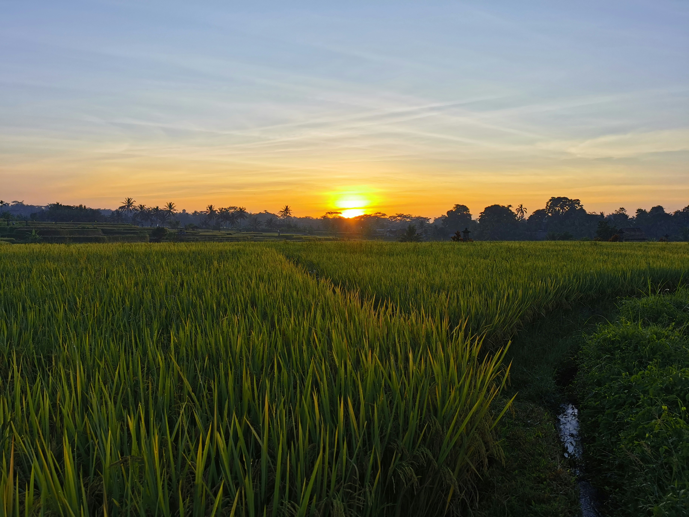

Plan the Mission
Define the field, set flight paths, and configure imaging parameters for complete coverage.

Define the field, set flight paths, and configure imaging parameters for complete coverage.
Autonomous drones collect high-resolution aerial images across the rice paddy.
Images are processed to reveal rice leaf diseases and pests infestation.
Clear maps and reports highlight problem areas for timely intervention.
Actionable maps, visual reports, and summaries designed for farmers, researchers, and decision-makers.
Rice leaf diseases and pest infestations
Orthomosaic generation, geo-referenced image alignment, and data preparation for analysis.
Autonomous flight control, waypoint navigation, mission planning, and repeatable survey execution.
High-resolution aerial imaging systems for accurate rice data acquisition.
To empower farmers by providing affordable, intelligent, and practical agricultural technologies that improve crop productivity, reduce losses, and promote sustainable farming across the Philippines.
We develop a drone-based crop monitoring system that transforms aerial field data into clear, actionable insights. OryzAID enables farmers and researchers to monitor crop health efficiently, reduce unnecessary intervention, and make informed decisions with confidence.
Rice is a critical crop for food security. Traditional field inspection is time-consuming and often reactive. OryzAID provides a proactive approach—allowing issues to be identified early, resources to be applied precisely, and productivity to be improved sustainably.